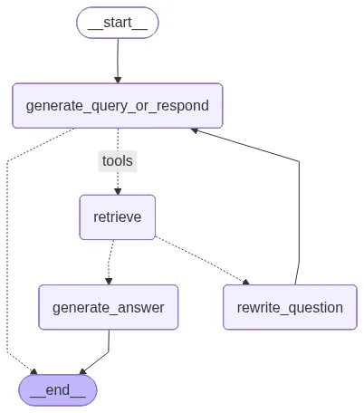
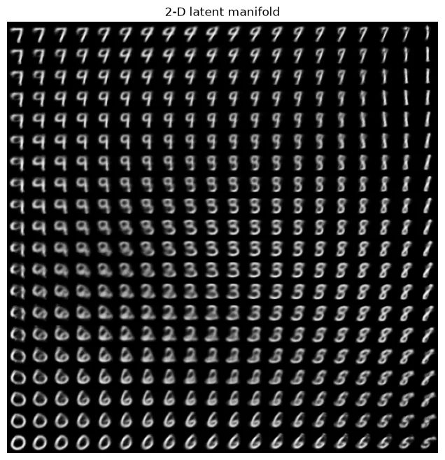
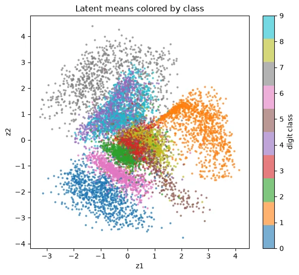
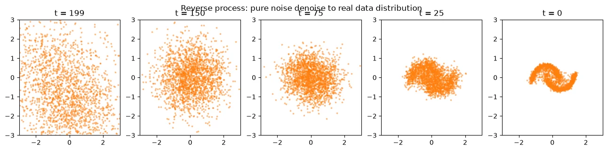
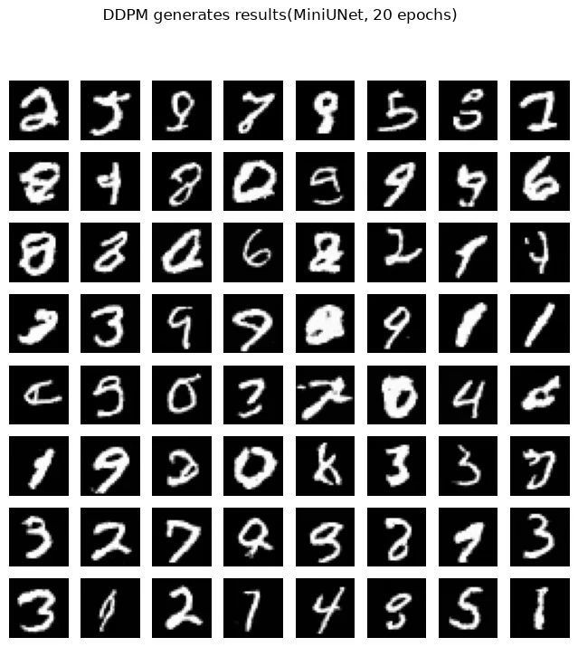

MVC Lab 課程的第九到十二週，主題整批轉向生成式 AI：W9 用 LangGraph 把檢索組成會自己判斷的 agent，W10 用 CLIP 和 BLIP 做圖文推論，W11 和 W12 是兩種生成模型——VAE 從潛在空間解碼、DDPM 從純雜訊一步步去噪。四個單元全部在本機跑完，模型下載、訓練、生成都有可驗證的輸出，其中 DDPM 在 MNIST 上訓練 20 個 epoch 後生成的手寫數字已經可以直接辨認。
前八週的主軸是辨識：分類、偵測、分割、決策，模型的輸出是一個標籤、一個框、一個動作。這四週的模型開始產東西——查資料回答問題、看圖說話、畫出沒見過的數字。前五份作業的紀錄在 EXP / P16，W6–W8（開集偵測、語意分割、強化學習）在上一篇。
# 四個單元總覽
| 週次 | 主題 | 工具 / 模型 | 關鍵結果 |
|---|---|---|---|
| W9 | Agentic RAG | LangGraph + Chroma + 本機 LLM | 兩種情境路由皆正確 |
| W10 | VLM 圖文推論 | CLIP ViT-B/32 + BLIP | zero-shot 分類三圖全對（0.89–1.00） |
| W11 | VAE（MNIST 生成） | PyTorch，2 維 latent | loss/sample 187.8 → 150.9 |
| W12 | DDPM（擴散模型） | MiniUNet 1.37M 參數 | 20 epoch 生成可辨認的手寫數字 |
# 逐週拆解
W9 — Agentic RAG：讓模型自己決定要不要查資料
兩本 notebook，全部在本機跑：LLM 掛在 localhost 的推論伺服器上，嵌入用 nomic-embed-text，向量庫用 Chroma。知識庫拿 NTUST AI 研究中心的公開介紹當示範素材，切成 10 個 chunk；每個問題都有明確的標準答案，檢索有沒有撈對段落一眼可驗。
第一本做基本 RAG：載入、切塊、嵌入、檢索、生成一條龍。兩個小實驗值得記：單一查詢 k=1 常撈錯段落，多查詢檢索讓 LLM 先把問題改寫成幾種問法、各自檢索再合併，命中率明顯改善；查詢擴展把「AI for farming」擴寫成一串農業關鍵字再查，把原查詢撈不到的段落補了回來。
第二本用 LangGraph 把 retriever 包成工具，決定權交給模型。流程圖上四個節點：generate_query_or_respond 先判斷這題需要查資料還是直接答；要查就走 retrieve，grade_documents 評估撈回來的內容相關與否；相關就 generate_answer 收尾，偏掉就 rewrite_question 改寫問題重跑一輪。兩種情境驗證：問中心的研究領域，走完整檢索路徑；寒暄性問題時，模型直接生成回答，未進行檢索。

W10 — VLM：CLIP 對齊、BLIP 開口
這週不訓練，作業是三個純推論 demo，素材是六張 COCO 公開影像。Demo A 用 CLIP 做 zero-shot 分類：把五句「a photo of a ...」的候選描述和圖片各自編碼，比餘弦相似度。三張測試圖全部答對——貓 0.982、熊 0.999、街景 0.889，中間零訓練、零標註。
Demo B 反過來做圖文檢索：三個查詢句各自在六張圖裡找最相符的一張。「animals」排第一的是熊、「a vehicle on the street」是街景、「something you can eat」是食物圖，三題排序全對。相似度數值都只在 0.2 上下，排序的相對高低才是 CLIP 可用的訊號。
Demo C 使用 BLIP 生成描述，對一張雙貓照片生成「two cats sleeping on a couch」，並進行問答：有什麼（cats）、幾隻（2）、主體顏色（pink）。CLIP 是將圖文對齊到同一向量空間以進行比對，BLIP 則是透過視覺特徵接入語言模型進行生成。
W11 — VAE：把 MNIST 壓進 2 維再畫出來
VAE 在 MNIST 上訓練：encoder 把 784 維像素壓到 2 維 latent（輸出平均值與變異數），decoder 從 latent 重建影像，損失是重建誤差加 KL 散度。15 個 epoch 跑完，每樣本 loss 從 187.8 收斂到 150.9。latent 取 2 維是刻意的——整個潛在空間可以直接攤在平面上看。

上圖是這份 demo 最值得看的一張：在 latent 平面取 20×20 個格點逐一解碼，7、9、8、1、3、6、0 在平面上連續變形，相鄰格點的字形幾乎一樣。下圖把一萬張測試影像編碼後依真實數字上色，同一個數字聚成一團、字形相近的類別彼此相鄰——生成的平滑性和分群結構是同一件事的兩面。

W12 — DDPM：從純雜訊一步步去噪
擴散模型的訓練分為兩部分。首先使用 2 維的雙月牙玩具資料進行原理驗證：前向過程按照 cosine schedule 加噪 200 步，最後一步 alpha_bar 只剩 6×10-8，資料變為純雜訊；反向過程則訓練一個小型網路預測每步的雜訊，從高斯雜訊逐步採樣回來，最終還原雙月牙的形狀。demo 裡還做了一個對照：採樣時把隨機項關掉、每步只取平均值，點群會塌縮到少數幾條平均路徑上——生成的核心是從分布中進行取樣，若每步僅選擇最可能值，則無法呈現分布的多樣性。

第二段搬上 MNIST：1.37M 參數的 MiniUNet 配時間嵌入，20 個 epoch 在 RTX 4060 上跑了 528 秒，loss 從 0.0605 降到 0.04 左右。從純雜訊採樣 64 張，多數數字直接可辨認，筆劃粗細和歪斜各有變化，是模型自己畫的、資料集裡沒有的字。

# 學術誠信聲明
這篇文章記錄了個人的學習過程。W10 是課程作業（純推論），W9、W11、W12 則是課程教學 notebook 的本機重現。notebook 的骨架由課程提供，所有執行輸出、訓練資料與圖表均由本人在本機完成。資料集（MNIST、COCO 樣圖）由程式自公開來源下載，一律不隨附。在學的 MVC Lab 學生請自己跑過一次。
# 技術環境
- 語言 — Python 3.11、PyTorch 2.6（CUDA 12.4）
- W9 — LangChain / LangGraph、Chroma、本機 LLM 推論伺服器 + nomic-embed-text
- W10 — HuggingFace Transformers（CLIP ViT-B/32、BLIP captioning / VQA）
- W11 / W12 — torchvision（MNIST）、matplotlib；DDPM 為 MiniUNet 1.37M 參數
- 硬體 — RTX 4060 8GB（VAE 15 epoch 數分鐘；DDPM 20 epoch 528 秒）
- Windows 重現注意 — DataLoader 要設 num_workers=0（spawn 模式無法 pickle lambda transform）；transformers 固定 4.x（5.x 起 get_image_features 回傳型別改變）
# 相關連結
MIT License